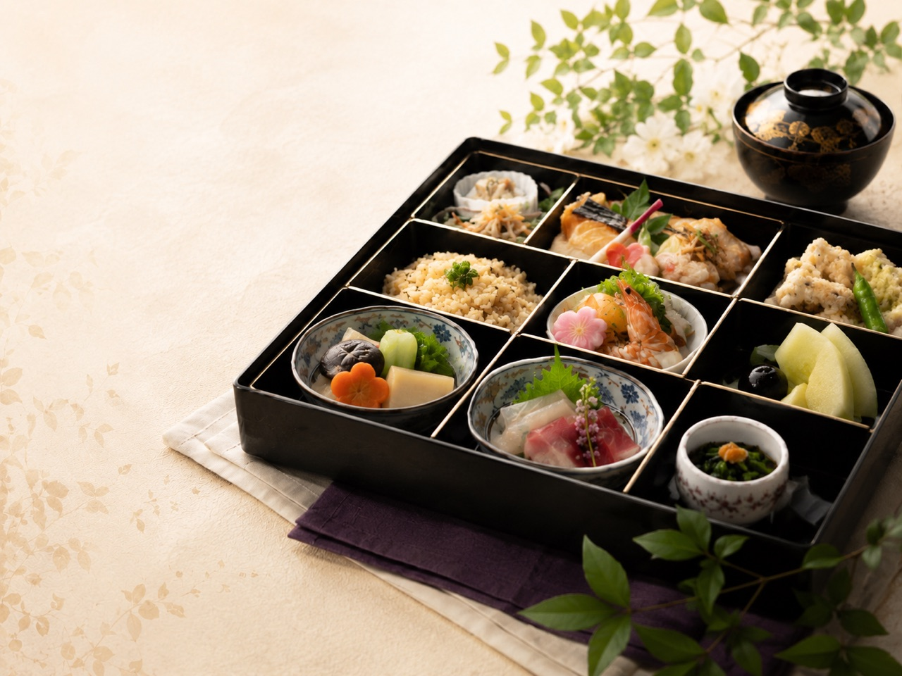
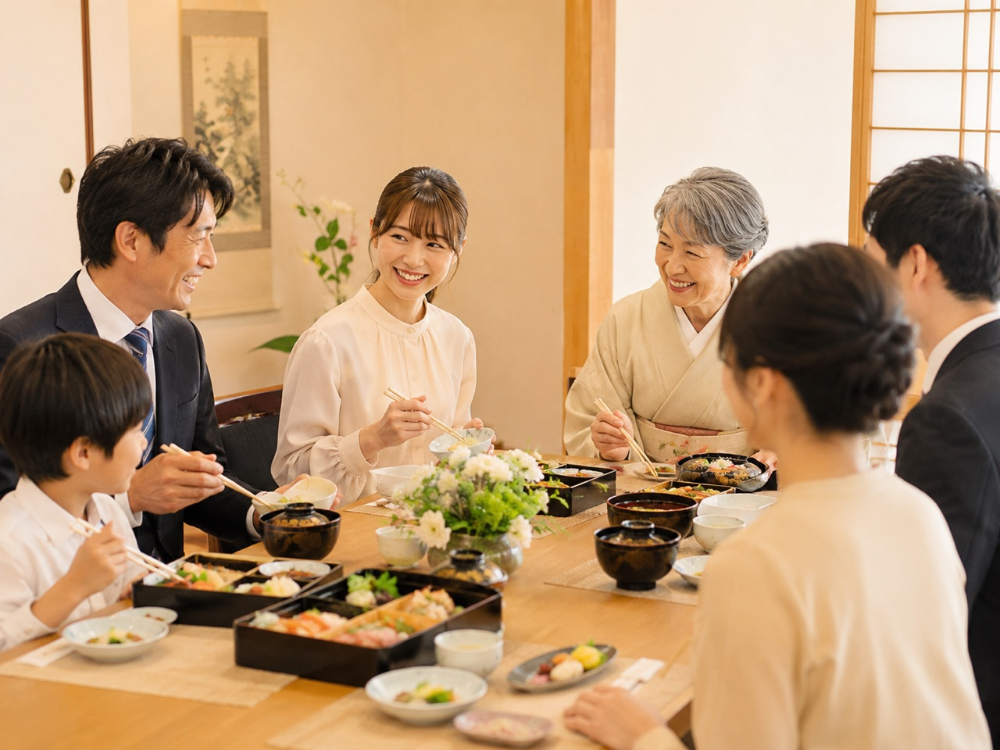
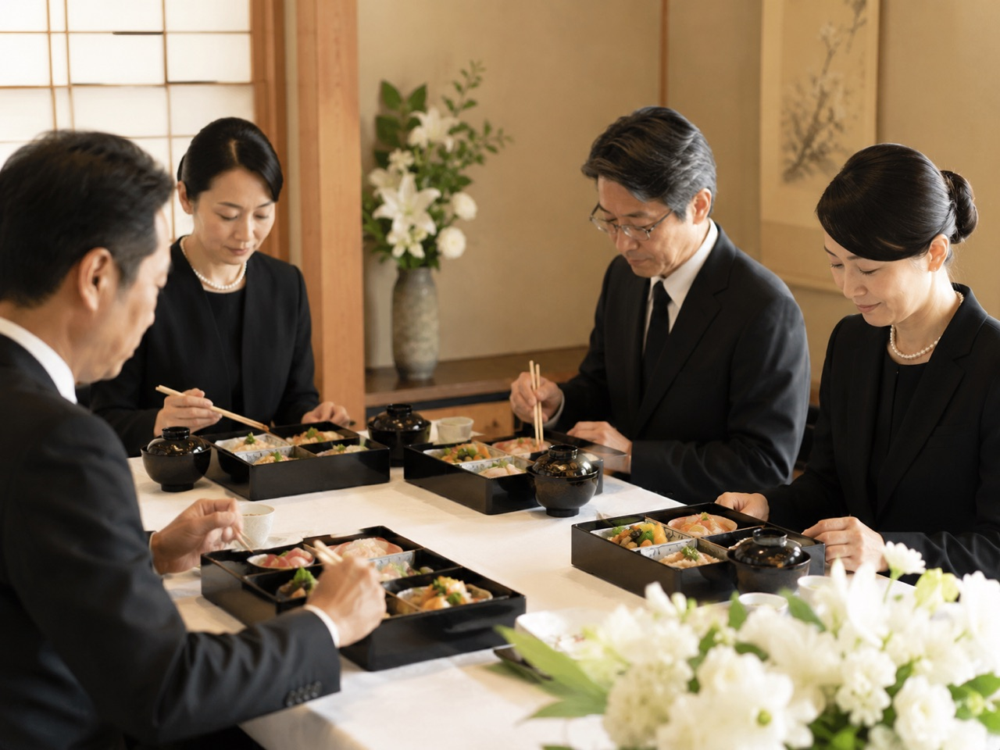
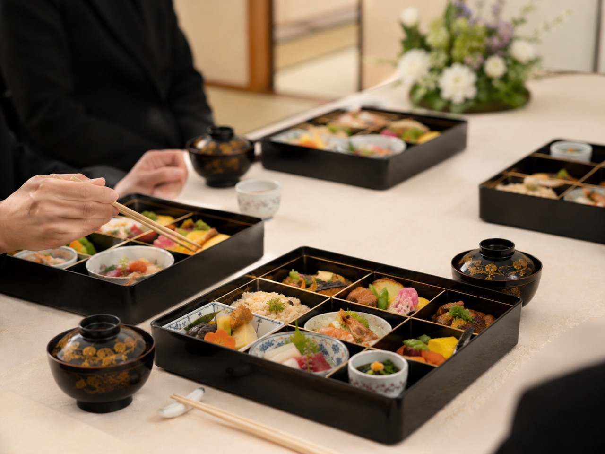
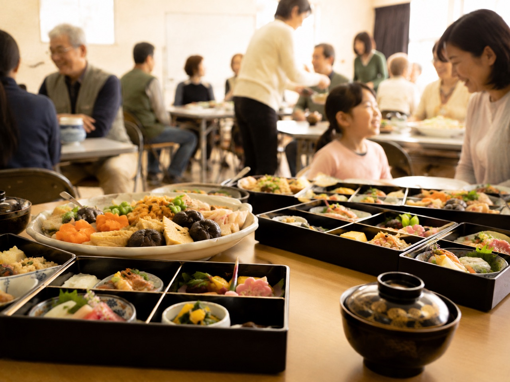
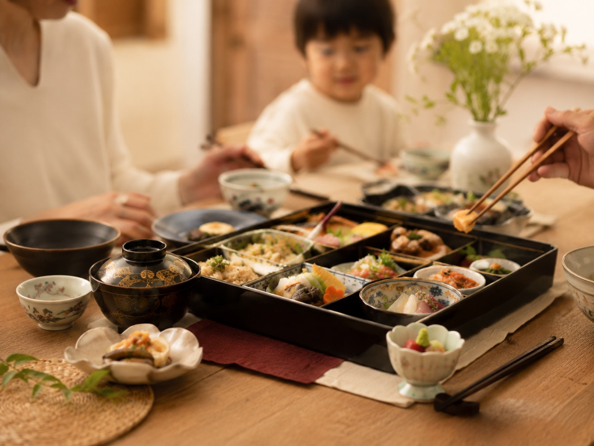

お集まりのご準備で
こんなお困りありませんか？
- 急に親族分の食事が必要になった
- 法事や会食で何を頼めばいいか不安
- 年配の方にも食べやすい料理がいい
- 会社や地域行事のお弁当をまとめて頼みたい
- 会場や自宅まで届けてほしい
- 予算内で相談したい
つむぎ仕出しでは、用途や人数、ご予算に合わせてお料理をご用意します。
内容が決まっていない場合も、まずはお気軽にご相談ください。
SCENE
さまざまなシーンに
ご利用いただけます
ご家族でのお食事から、地域の集まり、会社でのお弁当まで。
用途や人数に合わせて、食べやすく、心を込めたお料理をご用意します。
-

お祝い・ご親族の会食
長寿祝い、節句、顔合わせなど、華やかなお席に合わせたお料理をご用意します。
-

法事・法要
四十九日、一周忌、三回忌など、落ち着いたお席にふさわしいお料理をご用意します。
-

葬儀後のお食事
急なお集まりにも対応いたします。まずはお気軽にご相談ください。
-
会議・会社のお弁当
会議、研修、説明会など、まとまった数のご注文にも対応いたします。
-

地域行事・町内会
集会、町内会、イベント、スポーツ大会など、地域の集まりにもご利用いただけます。
-

ご自宅でのお食事
ご自宅での会食や、家族の集まりにも配達いたします。
ひと品ひと品に、
まごころを込めて。
季節の食材を活かし、用途やご予算に合わせて、ひとつひとつ丁寧にお作りします。
急なご弔事・ご法要後も
まずはお電話でご相談ください
ご法要や葬儀後のお食事は、
急に準備が必要になることも少なくありません。
日時・人数・ご予算を伺い、
対応可能な内容をご案内いたします。
- 「急なことで頼み先が分からない」
- 「人数がまだ決まっていない」
- 「会場まで届けてほしい」
といった場合も、どうぞお気軽にご相談ください。
お急ぎの場合は、お電話でのご相談がおすすめです。
REASON
つむぎ仕出しが選ばれる理由
-
01
用途に合わせて選びやすい
法事・お祝い・会議弁当・地域行事など、目的に合わせて選びやすい基本メニューをご用意しています。
-
02
ご予算や人数に合わせて相談できる
人数やご予算が決まっていない場合も、ご相談いただけます。内容や数量に合わせて、無理のない形でご提案します。
-
03
架空市内・近隣地域へ配達
架空市本町を拠点に、架空市内・近隣地域へお料理をお届けします。会場やご自宅への配達もご相談ください。
-
04
幅広い年代に食べやすい味
ご年配の方からお子さままで、幅広い年代の方に食べやすい、やさしい味付けを大切にしています。
架空市内・近隣地域へ、
心を込めてお届けします。
ご自宅・会場・会社など、ご指定の場所まで。お時間に合わせてお持ちします。
FLOW
ご注文の流れ
初めての方でも安心してご相談いただけるよう、日時・人数・ご予算を伺いながらご案内します。
-
STEP 1
お電話・LINEでご相談
ご利用日、人数、用途、ご予算などをお知らせください。内容が決まっていない場合もご相談いただけます。
-
STEP 2
内容の確認
配達先、希望時間、数量、アレルギーの有無などを確認します。
-
STEP 3
メニューのご提案・ご注文確定
ご希望に合わせて内容をご案内し、注文内容を確定します。
-
STEP 4
当日お届け
ご指定の時間に合わせて、ご自宅・会場・会社などへお届けします。
GUIDE
配達エリア・ご注文について
- 所在地
- 架空市本町エリア
- 配達エリア
- 架空市内・近隣地域
一部エリアは配達料をいただく場合があります。 - 注文締切
- 通常3日前まで
急なご法要・葬儀後のお食事は、お電話にてご相談ください。 - 最低注文数
- お弁当・お膳は5個から
オードブルは1皿から相談可 - お支払い方法
- 現金・銀行振込
- 営業時間
- 9:00〜18:00
- 定休日
- 水曜日
FAQ
よくある質問
-
お弁当・お膳は5個から承っております。内容によってはご相談いただける場合もありますので、まずはお問い合わせください。
-
通常は3日前までのご注文をお願いしております。ただし、急なご法要・葬儀後のお食事などは、お電話にて対応可能な内容をご案内いたします。
-
架空市内・近隣地域へ配達しています。一部エリアは配達料をいただく場合があります。
-
ご予算や人数、用途に合わせてご相談いただけます。季節や仕入れ状況により、内容が一部変更になる場合がございます。
-
できる限り確認のうえ対応いたします。ご注文時に、対象の食材や人数をお知らせください。
-
法事・法要用の掛け紙についてもご相談ください。用途に合わせてご案内いたします。